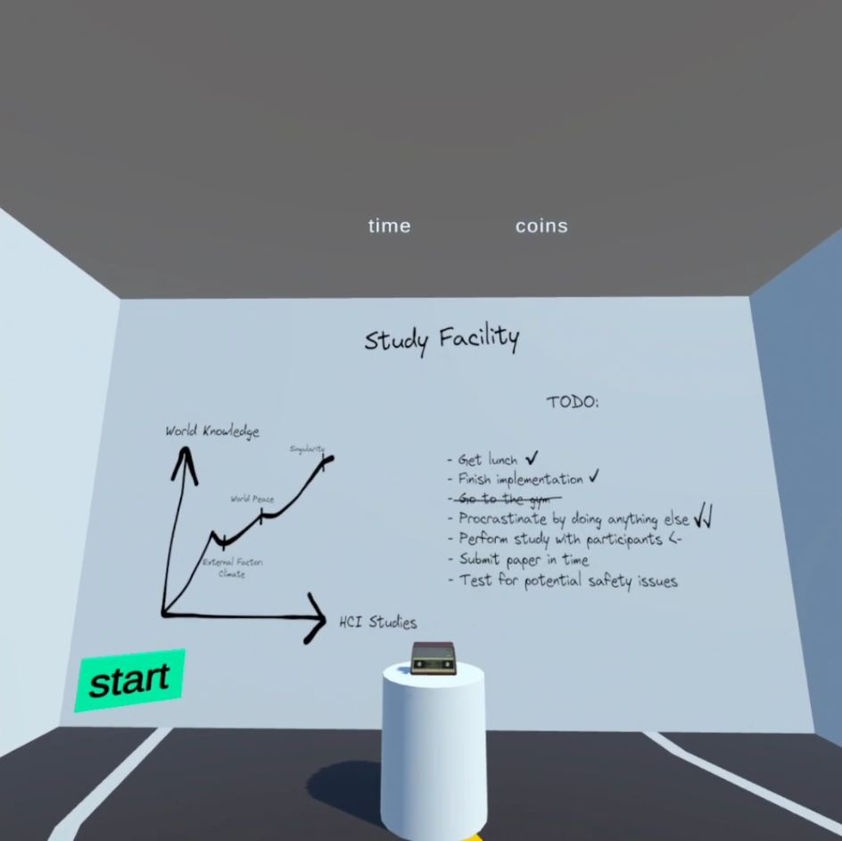

[Off-Topic note: The view of this blog post is not (yet) optimized for mobile browsers, I would recommend to read it on a bigger screen if possible.]
This is my report for my university project for the course Interaction in Virtual and Augmented Reality.
Motivation
We have been given an existing VR project. In this virtual environment exists a race track through a city. Along the way are collectable coins. The race track is structured in three different areas. Shortly before a new area, a task has to be done, at which a T-shaped object has to be selected, rotated and moved in the second T-shaped object. Ideally, those two T-objects are then exactly at the same position with the same rotation, so that you can't distingish them anymore.
We had the following tasks:
- Implement a locomotion method
- Implement a method that allows selection, moving and rotation of the T-objects
- Implement something that reduces cyber-sickness
- Design and execute a study to evalute the results
Initial Implementation Idea
My initial idea was to implement some flying. Either some Ironman-like flying locomotion where you put your open hands down horizontally and it applies some upwards force and some force in the direction of where you are looking. Or some Superman-like flying where you have some power-pose that let you fly in the direction of your strechted arm, both horizontal and vertical.
For the interaction task, I wanted to stay in this superhero-themed setting and either use some Ironman-like energy beams that attach to the T-object on the first hit and then rotates and moves with your hand. Or effectively the same thing with some Spiderman webs.
For the cyber-sickness reduction, I planned to implement a tunnling vignette.
Technical Details and Actual Implementation
General
The implementation is build with Unity and requires a Meta Quest 2 headset to run.
The original implementation used Unity 2021.3.10f1 and the Oculus Integration 46.0 package. Over the timespan of my development, I first updated to the latest Unity patch version and later performed an upgrade to Unity 2022.3.19f1. First of all, I wanted to be able to use all currently existing engine features and packages, that only work with newer Unity versions, and secondly, even more important, I also had another university project at the same time, that was also implemented in this Unity version. I did not want to learn and work with two different Unity version simultaneously, particular as I keep getting the impression, that Unity is changing things regularly in a backwards incompatible way.
Upgrading Unity to the 2022.3 LTS version also forced me to migrate from the now legacy Oculus integration, that was directly available from the Unity package registry, to the new Meta SDKs, that are either available from the Unity Asset Store or directly via Meta's npm registry. (Side note: The Unity package manager builds upon npm. Therefore other npm registries can be added and then directly used inside the Unity Editor's package manager.) I first went with the Asset Store version as I was already used to its integration workflow as I am also using other assets from there, but I had to switch to Meta's npm registry later on, when I added continuous integration (CI) and continuous delivery (CD) to my git repository, since the Asset Store always requires authentication with an Unity account, even for free assets, and my CI system does not support this for the Asset Store at the moment.
As part of the modernization of Meta's integration, I also switched from the existing, standard game objects that have Meta scripts attached, to Meta SDKs' building blocks.
Unity itself has several official packages for XR development. I experimented around with several of them, but ultimately do not use them in my final state of the project. Those XR packages do not seem to be compatible with Meta SDKs, therefore would have required me to re-implement everything and re-learn a lot. For this, the time was to limited. However, I have the impression that Unity's XR packages are probably a solid choice for any new project, for several reason:
- They work with a wider range of XR hardware, not just Meta hardware.
- They come with a lot of ready-to-use functionality for interactions, locomotions and cyber-sickness reduction methods I would have been interested in, that in part do not exist at all or in that specific way in the Meta SDKs.
- My subjective, perhabs misleading, impression is also, that there seems to be an overall trend towards those Unity packages. I oftentimes found more up-to-date information how to do X, Y, Z with those integrations, but had a much harder time to find the same information for the Meta SDKs.
At the end, I also enabled Meta Quest 3 as a build target, however, this is completely untested and my project might not work at all with Quest 3 hardware.
Game Loop Logic
I made several changes and enhancements to the game loop logic. As my study design has the task to get as many rounds done in 10 minutes as possible I had to change the logic that previously ended the parkour after a single round. Now, the logic resets everything so that an endless amount of rounds are doable within the time limit. All coins, even previously collected ones, do re-spawn.
Originally, the interaction task was completely ignoreable as people could just walk (or fly) past it. I added a road blockade until all 5 T-objects for each area are done. The blockade also displays the number of objects that have yet to be positioned. Furthermore, when the appearance of the task is triggered, all locomotion techniques are disabled for the duration of the task, preventing (most) escape and cheat attempts.
I also changed many implementation details, including the logging for the study data.
Locomotion
I kept the original idea of enabling the player to fly, but eventually gave up on trying to implement a flying method that feels "natural". "Natural" meaning, that there is some mechanism that adds some amount of vertical force on the player and the player only slows down through gravity, crashing into another object or through some kind of break mechanism.
Getting the physics right for a scenario, where players have to constantly and quickly change directions is hard. I went through many iterations of differnt kinds of force-logic, some can be found in my git history, many others did not even make it so far. Most of them were really hard to control from a player perspective or caused very strong cyber-sickerness symptoms.
In one of those intermediate interactions, I had added a flying force by pressing the right trigger button. The player would than naturally fall down with gravity again. I eventually figured our physics numbers that made it controllable rather well, but I did not want this to be the final flying method, as it did not feel creative and innovative enough. It is still possible to turn this control on in my final solution, but it is off by default and can only be changed before a build, not during runtime.
In another one of those intermediate interations, I experimented with using the body height of the player to control the flying height, or to be more preceise, the height of the headset in relation to the floor height. Standing straight would mean having the maximum flying height, getting closer to a pre-determined min-height would bring down the player more and more. The max and min height need to be determined before the game begins in order for such a logic to work. For the max value to be correct, the game has to be sure that the player is standing straight, at the time of taking this value. And a min value has to be recorded in a moment, that the player is aware of too. One might think, that the floor can be taken as such a reference point, but that wouldn't be good either:
- It would be a terrible idea that the player has to bring their head down on the floor to reach the min flying height.
- Different people have a different comfort level of how far they can bend their knees, not once, but often and for a longer time.
It turned out, that the to be expected height difference of the headset, between standing straight and going down as far as it is comfortable and holdable for a longer time period, is too small for this use case. Even slight height chances would change the virtual player position dramatically. Therefore this method did not allow a precise enough control.
However, my final solution build upon this concept. Instead of the height of the headset in relation to the floor, I used the right controller height in relation to the virtual player object. Now, the implementation requires the player at the start to put up their right hand as far as comfortable and press a specific button. Then, they have to put their right hand down as far as comfortable and press another button. These min and max heights are then mapped to specific vertical forces. Within this height range:
- For the bottom < 45% height positions, the player gets added a vertical force, that pulls them down. The lower the position, the quicker they will fall down, if the are already in the air flying.
- For 45% until 56% (excluding) height positions, the player gets removed (almost) all vertical forces. This causes an "elevator flight" effect and enables the player to (almost) stand still in the air. (There is still a very tiny force downwards, as I have technically not disabled gravity for the player object, however, that is only noticeable at all, if there is no other velocity and if you really pay attention. For all practical purposes within the parkour it is irrelvant.)
- For positions at 56% height and above, the player gets added a vertical force upwards. The force added is bigger the higher the position is.
This "elevator flight" has assumingly a big enough range to control the flying precisely enough and fast enough for our race track. On the other hand, it was also the reason why I gave upon the superhero-theming alltogether.
For the vertical movement, I rather kept it simple: By pressing the left trigger button a certain force is getting added in the direction in which the player looks. The longer the button is pressed the more force is building up, allowing acceleration and giving a "drifting-feel". However, this lead to the problem that sudden changes of directions are really hard to control. In my final solution, I did not just leave it to gravity and player-added counter-forces to let the player slow down, but implemented a logic, that artificial reduces linearly the horizontal velocity to zero over a few seconds, that start as soon as the player is not adding new horizontal speed and stops when they are adding new horizontal speed.
Cyber-Sickness Reduction
For the tunneling vignette, I tried to use several pre-existing implementations, including:
- Vr Tunneling Pro
- GingerVR
- Meta SDK vignette
- Unity XR vignette
The first two solutions did probably not work due to incompatibilities with my used Unity version. Meta's vignette was surprisingly undocumented and seems to be only directly mentioned in older Meta package versions. So perhabs this is somewhat unmaintained, but one way or another, I couldn't get it working. And finally, the Unity XR vignette is not compatible with the Meta SDKs as it requires to be attached to a singular camera object. Meta's integration has one camera game object for the left lens and one for the right lens.
Ultimately, I am succesfully using the Tilia.Visuals.Vignette.Unity package. The vignette gets bigger/smaller/disabled dynamically, based on the player's overall velocity, both horizontal and vertical.

Interaction
Since I moved away from the superhero-theming, my original idea for the interaction task did not fit anymore. I searched for a new thematical inspiration and found one in the game Portal 2.
The original parkour project enabled to grab and rotate the T-objects by moving the controllers inside the T-objects, pressing the grab button and than control it with regular hand and arm movements.
This has several advantages:
- 6 degrees of freedom
- rather intuitive and natural
- direct way to manipulate
But it also means, that you are limited by your arm lenght and physical environment to reach things.
I kept the general idea of using this kind of direct, controller-based interaction, but advanced it by adding portals. Now, when the object task is triggered, a blue entry portal appears directly in front of the player. On the left border side of this portal, a "start" button appears. Once the players touches it, an orange exit portal appears together with the moveable T-object and the target T-object. As soon as the players moves one or both physical controller through the blue entry portal, the virtual controllers are getting teleported to the orange exit portal. Being there, they can generally still be controlled as always. However, when the exit portal is not parallel to the entry portal, there is some mental re-thinking required as the rotation of the controllers is different than their physical counterparts.
I also experimented with exit portals that have their front side inverse to the entry portal (basically a rotation of ~180 degree), but this was way too hard to control. Therefore such exit portals are not part of the final parkour. Within certain ranges, the exit portal and the T-objects' positions and rotations are randomized, causing sometimes easier interaction tasks and sometimes tough ones.
Whenever the player thinks that they are done with placing one T-object, they can hit a "done" button on the right side of the entry portal. After a short cool off, the "start" button re-appears and has to be hit again for the next exit portal and T-objects to appear.
One of the positive effects of this portal interaction method is, that objects can be reached that normally could not be reached with the given physical limitations. To conclude, I ended up with the same advantage as my original interaction idea would have had, but also finished with a method, that still feels more natural than shooting spider webs or some energy beam.
Unity Quirks and Iteration Time
While Unity is a powerful tool with many features, it has also many quirks that, at times, were really frustrating.
My biggest pain point with Unity are the incompatibilities everywhere. Not just between different version of the Unity Editor itself, but also between different versions of official(!) Unity packages. And even within the same Unity Editor version with the same sets of packages and package version, you can find many project-based toggles than switch between some old implementations and behaviours of something. Additionally, you have many fundamental component choices like which Unity render pipeline your project uses, that have signifiant influrence on what you can do in the first place. And changing later might require re-working major parts of a project, which is oftentimes not feasible.
All of those things, lead to the phenomenon that whenever you are searching for learning resources, packages, scripts, assets etc. there is an enourmously high chance, that it won't work for your project for one reason or another. This does not apply to basics, so while learning the basics of Unity, you should be fine. Unity experts are probably also not that much effected by that, as they have enough knowledge to workaround this or implement everything by themselves in the first place. But for everyone falling in-between, this is frustrating.
Moreover, I encountered some things, that might or might not be (directly) Unity faults. For some time, I had my Unity project saved on an external drive instead of an internal one. This caused Unity several times to crash for no apparent reasons. Somehow this crash managed to also disconnect all external devices of my computer for a while, before they automatically came back. One time, the crash even corrupted my git repository that contains the Unity project. Thankfully, I could clone my work from GitHub and had lost very little work. Those Unity crashes stopped instantly when I moved the project to an internal drive. And just for the protocol, I have all my other git project on this external drive and never encountered problems.
Another annoying obstacles has been the iteration time for each (change -> build -> test) cyclus. Whenever I changed a script of my project, the Unity Editor starts to re-import all Assets (scripts count as assets in Unity's terminology), leaving me with a progress bar that takes one to two minutes. Only after that, I can even trigger a new build. If you are doing this for a few months, it becomes almost like a trance where you oftentimes don't even know anymore if you waited for the first process to finish or the second one. Unity lacks a clear indication if there were any project changes after the last build.
The Meta integration (and the former Oculus integration) provide another option to build the project for a Meta Quest device, besides the default Unity build options. Those Meta build dialogs promise to be quicker, since they are using better caching. For my project it turns out, that those builds took ~ 12 - 14 minutes for each build, while the default Unity build option took around 8 - 9 minutes, at the time when I started to use the default build. It is now even faster, since I removed a lot of unused assets from the project and applied some more recommended settings (e.g. disabling strip engine code, commit).
CI / CD
I also added CI and CD for my project via GitHub Actions. For each git push, the Unity projects gets build, any warnings and errors get reported and if the build is successful, the APK file is getting uploaded to GitHub as a build artifact. When I tag a new version of my implementation, a GitHub Release gets created and the APK file is getting uploaded to it as well.
You can find the CI runs here and the releases here.
Study
I designed an user study, made some early test run with a pre-study and then, with some small study adjustments and a heavily changed implementation, I performed the actual study.
Study Design
The pre-study and study design and their purpose do not match the typical structures of pre-studies and (actual) studies to some degree. Typically, you want to choose between a between-subject and a within-subject study structure and use the study to generate data, that helps to evalute the different levels of the independent variables of the study. In our case, we have three independent variables. Those are the locomotion system, the interaction system and the cyber-sickness reduction technique.
Due to the structure of the IVAR course, we basically only had to have one level of each independent variable, meaning only one implementation of each system / technique. We would then compare our results to the results of the other course students, that have their own implementations. This comparision is rather vague, given our freedom in the implementation, reaching from only changing the position of some coins to re-doing the entire virtual environment from the ground up in another game engine.
I extended this task a bit to come closer to a typical study structure again, by performing two user studies with a different implementation / level of all three systems / independent variables. I am going to call the first one pre-study, and the second just study or final study for the purpose of this report, even though the term pre-study is commonly used differently in most aspects.
The study is therefore a between-subject in-lab design, with two levels of each independent variable. Even though it is not a clean comparision, due to the fact that other conditions as the independent variables changed, which should not be the case ideally.
The general procedure of the user study is as follows:
- Welcome / Introduction
- Ethnical disclaimer (participants are voluntary, unpaid, can end the experiment at any given time)
- Privacy disclaimer (what data is saved and published?)
- Pre-Questionnaire
- Teaching / Explanation of the hardware, virtual environment, tasks and control
- Participants can try the controls, locomotion and and interaction for some time
- Explain the task once more: As many rounds as possible, as many collected coins as possible, as precise at the interaction task as possible. Your own choice where your priorities are.
- 10 minute task performance
- Post-Questionnaire
- Goodbye / Hardware cleaning
You can find checklists that I made for myself to execute this study with participants in the study data repository (pre-study checklist, final study checklist). Such notes ensure, that every participant hears all explanations and experience all trainings and tasks, in the same order and in the same way. Avoiding accidental manipulation of the study results.
During the entire study, I make notes of everything interesting the participant might do and say (pre-study, final study). Furthermore, there is automatical logging of (pre-study, final study):
- How many coins were collected in which area and round.
- How much time the participant took for each area, for moving through it and for the interaction task.
- How precise the participant was for each object interaction.
- How fast the participant was for each object interaction.
- Some more logging for position and vectors, but those are mostly debug information that shouldn't matter for the actual study.
I made some improvements to the study execution and the automatic logging after the pre-study, but my task instruction and the pre- and post-questionnaire were identical for both. You can find the full questionnaires here:
For the final study, the view inside the VR headset was also video recorded for every participant. You can find a playlist of all participant task videos on YouTube.
Here is a video of myself doing the 10 minute task:
Study Results
Due to time constraints, I could only perform the pre-study and actual study with a small mount of people.
The raw data of all results can be found in the study data repository.
For the pre-study, participants were given an implementation that had a very different locomotion method, no cyber-sickness reduction method and the interaction was done directly by the controllers, without the portals or other more complex things. Furthermore, in the pre-study, they only had to do one interaction trask per race track part, instead of five.
Hence, the data between the pre-study and the final study is only compareable with some caution, unfortunately.
Pre-Study Participants
I had two participants (P1, P2), both male, being 29 and 27 years old (average: 28), that have rated their pre-existing experience on a scale from 1 - very inexperiened to 5 - very experienced, with a 2 and 1 respectively.
Study Participants
For the final study, I had four participants (P3 - P6), that were given the final implementation of the locomation and interaction method and with a enabled tunneling vignette.
One participant was female (P3), the others (P4 - P6) were male. The age average was 41.25 years (56, 50, 32, 27). On a scale from 1 to 5, P5 estimated their previous VR experience with a 2, while everyone else answered with a 1.
Discussion
Race Track Parts Finished
| Part1 | Part 2 | Part 3 | |
|---|---|---|---|
| P1 | 4 | 3 | 3 |
| P2 | 5 | 5 | 4 |
| Average pre-study | 4.5 | 4 | 3.5 |
| P3 | 1 | 1 | 0 |
| P4 | 1 | 1 | 0 |
| P5 | 1 | 1 | 1 |
| P6 | 2 | 2 | 2 |
| Average study | 1.25 | 1.25 | 0.75 |
| Average total | 2.33 | 2.17 | 1.67 |
Collected Coins Per Part Average
| Part1 / max 16 | Part 2 / max 30 | Part 3 / max 23 | |
|---|---|---|---|
| P1 | 0.75 | 20.33 | 15.33 |
| P2 | 13.4 | 29 | 17 |
| Average pre-study | 7.08 | 24.67 | 16.17 |
| P3 | 10 | 20 | / |
| P4 | 11 | 14 | / |
| P5 | 14 | 30 | 23 |
| P6 | 9.5 | 12.5 | 16.5 |
| Average study | 11.13 | 19.13 | 19.75 |
| Average total | 9.78 | 20.97 | 17.96 |
In the pre-study, the participants were able to finish more rounds. While this could correlate with the locomotion system theoretically, it is more plausible, that this due to the increased interaction requirement from solving only one object task in the pre-study per race track part, instead of five in the final study. Thus keeping the participants longer busy with the interaction task and preventing them from moving forward.
In the pre-study, only Part 3 had coins up in the air. In Part 1 and 2 all coins were placed on the ground in the pre-study, while the final study, had for every part some coins on the ground and some in the air. The results shows, that people have collected some more coins on average in the final study in Part 3 than in the pre-study, backing up my overall impression, that people struggled with jumping in the pre-study and had an easier time to collect them in the final study due to the new flying locomotion technique.
However, there is not enough data, to have a strong guess, why the average collected coins in part 1 and part 2 have mixed results. It might be, that people performed better in part 1 in the final study than in the pre-study, due to the locomotion system slowing down horizontal accerleration more quickly, thus allowing better control in this part of the race track with the most curves. In part 2, however, people collected more coins in the pre-study, this could be due to the fact, that all coins were on the ground in the pre-study, but many coins were flying in the final study - and simultanously, this part only has a single curve, thus, potential improvements in the horizontal agility might not have a huge impact, in contrast to the results of part 1.
Task Interaction Error Offset Average
Rounded to max. eight decimal places.
| Part 1 Average | Part 2 Average | Part 3 Average | Total Average | |
|---|---|---|---|---|
| P1 | 0.0005 | 0.00666667 | 0.00666667 | 0.006 |
| P2 | 0.0052 | 0.002 | 0.005 | 0.02071428 |
| Average pre-study | 0.00285 | 0.00433334 | 0.005833335 | 0.01635714 |
| P3 | 0.22259461 | 0.13199556 | 0.1298599 | 0.16148336 |
| P4 | 0.13538194 | 0.24925465 | 0.06607917 (only 3 out of 5 finished) | 0.16318619 |
| P5 | 0.17476597 (in the second round, the time run out while working on the first object) | 0.41176774 | 0.10948232 | 0.2284278825 |
| P6 | 0.05867392 | 0.06364694 | 0.06099468 | 0.06110518 |
| Average study | 0.14785411 | 0.19062511 | 0.09160402 | 0.14336108 |
The error offsets describes how far off the placed T-object was compared to the position of the target T-object. First, an error vector is calculated, one offset for the x, y and z coordinate axis respectively. Then, the magnitude of these vectors get calculated.
It is unfortunate, that the error offset in the pre-study was rounded to only two decimal places and the error vector was not logged. In the final study, this was improved to log exact values and additionally the error vector.
It was to be expected, that the precision for the tasks are better in the pre-study than in the final study. The direct manipulation of the objects with the controller, while standing directly in front of it, allows better precision, than having to look from a distance, hence the pre-study precision was on average 7.8 times better. Future work, should experiment with portals, that let you see the camera perspective of the exit portal inside the entry portal, thus eliminating the requirement to look from a distance. Furthermore, this would allow to have objects between the entry and exit portals that can block the view entirely.
P5 has a noteable spike in the error offset for the part 2 average, both globally and when comparing with P5's part 1 and part 3 average. This can be explained with the observation notes. P5 got once a portal and T-object spawn, that they found so hard, that the task was not even tried. To quote: "What is that? I can't see anything there. I can't reach that. Can I skip that? Yes, I am going to that now."
It it worth noting, that while this particular task spawn was indeed difficult, it was not impossible to solve (all possible spawns should be solveable). The exit portal was on the far right and very close to the entry portal, hence, the borders of both the entry and exit portals blocked a large portion of the view on the T-objects. However, leaning to the left and right allows to see enough of the T-objects theoretically. P6 had a similar verbal reaction to a difficult task spawn once, but had the patience to try to solve it and therefore has no notable spike in their error offsets.
Cyber-Sickness, Presence, Enjoyment
- Cyber-Sickness: On a scale from 1 to 10, how much motion sickness do you perceive right now? On a scale from
1 - very lowto10 - very high. - Presence: On a scale from 1 to 10 how present did you feel in the virtual world? On a scale from
1 - very lowto10 - very high. - Enjoyment: On a scale from 1 to 10, how much fun did you have during the task? On a scale from
1 - very lowto10 - very high.
| Cyber-Sickness | Presence | Enjoyment | |
|---|---|---|---|
| P1 | 2 | 6 | 6 |
| P2 | 2 | 8 | 7 |
| Average pre-study | 2 | 7 | 6.5 |
| P3 | 1 | 10 | 9 |
| P4 | 6 | 7 | 8 |
| P5 | 3 | 6 | 7 |
| P6 | 1 | 6 | 5 |
| Average study | 2.75 | 7.25 | 7.25 |
| Average total | 2.5 | 7.17 | 7 |
There seems to be no major difference on average when it comes to cyber-sickness symptoms, between the locomotion system of the pre-study and the final study. P4 has a spike, but individual people have different sensitivity to cyber-sickness. That there is no major difference on average is an interesting result, since the pre-study had no tunneling vignette, while the final study had one. Thus, one could expect, that the cyber-sickness symptoms in the pre-study are more severe. On the other hand, the pre-study locomotion system was based on a continious teleportion of the player. Teleportion is known to cause less cyber-sickness in general. The final study's locomotion system did use an accerlation system instead. Once more, more data would be required to have deeper insights.
The average response for the presence is almost identical (7 in the pre-study, vs 7.25). The average value for enjoyment has a small difference (6.5 in the pre-study vs 7.25), but there is too little data to make an educated guess why this might be.
Future Work
In the future, the study could be performed with more people to get more significant data. Furhermore, it should be performed with even more locomotions and interactions methods, to have more data to compare it to other implementations and to find out which locomotion and interaction systems allow people to be the fastest and most preceise and how cyber-sickness symptoms can be reduced at best. It should also be ensured, that all other conditions are the exact same to have cleaner data.
Several ideas did not made it into the final version of my project due to the limited time. For once, it would be nice to implement a restarting option directly into the game. Currently to start over, you have to close and re-open the application.
Second, I would have liked to experiment with portals, that allow you to see the camera perspective of the exit portal within the entry portal, thus eleminating the factor, that you have to look at the T-objects from afar, enabling that other objects can be in-between the entry and exit portal that block the natural line-of-sight and making a literal limitless range between the entry and exit portal possible. The precision of such a system might than be virtual identical to the results of the pre-study, that used direct controller grabbing manipulations.
Futhermore, I wanted thematically to go deeper into the Portal 2 direction. I began to create a prototype for a starting area in which the player spawns, when loading the application. While my concept also used this place for some entertainment, it also would have fulfilled the practical purpose of on-boarding the player. It would have explained how to configure the flying height with the right controller and how to use the controls in general and what the goals are, therefore requiring no external knowledge before starting the game.
In Portal 2, players are test subjects that have to finish experimental test chambers. Since my project is used for a study and the players are study participants, I wanted to double down on this thematically. You can find a screenshot of the concept starting area down below. Spoiler: Since the player is not particulary safe in Portal 2 either, this starting area might have catched fire and exploded eventually, destroying the starting area and allowing the player to start the parkour.

Conclusion
During this project I was able to learn a lot about the Unity Engine and VR. I designed and executed an in-lab user study with participants and analysed the results, something that I had only done once before, but which is something that I find quite interesting. Figuring out the physiological and psychological reasons, why humans interact with computer systems in the way they do and trying to understand what methods work under which particular conditions can be quite exciting.